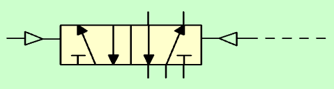
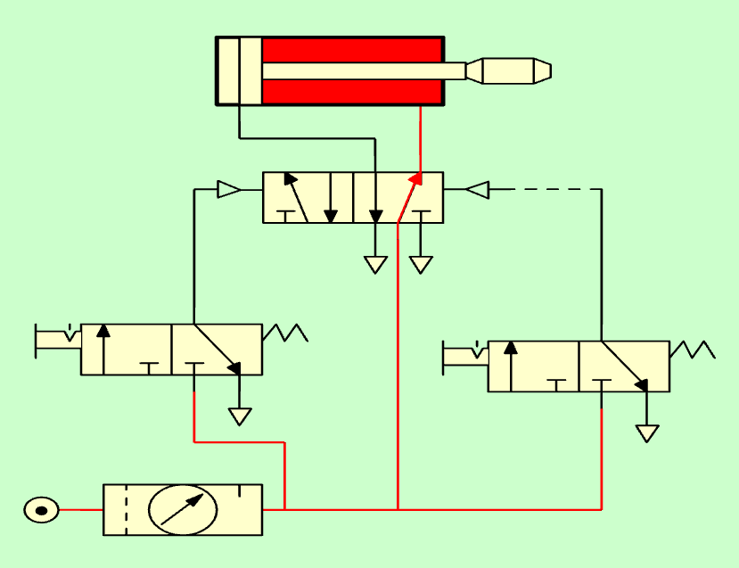
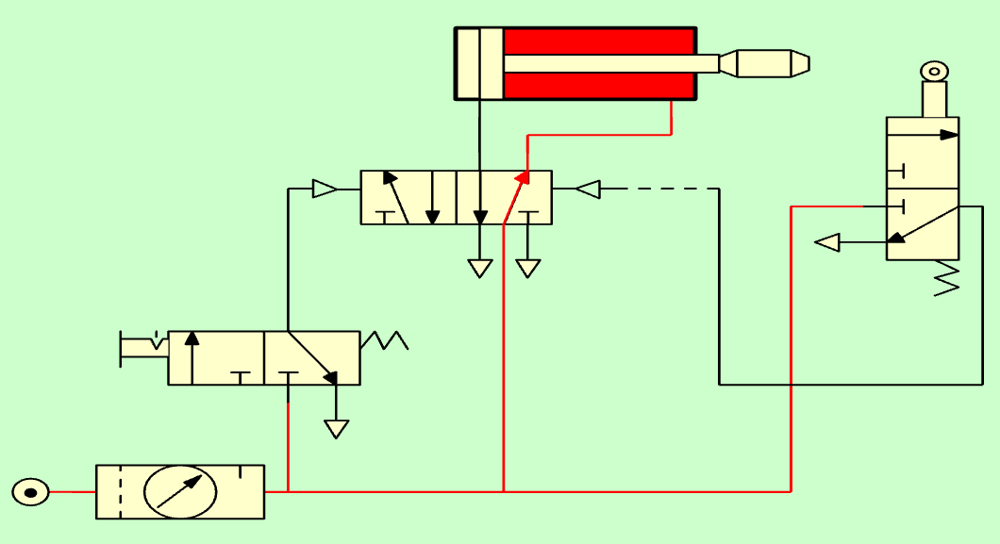

8. Vàlvula amb pilot pneumàtic¶
El pilot pneumàtic consisteix a moure una vàlvula de posició gràcies a la pressió de l’aire sota pressió.
A continuació, es pot veure el símbol d’una vàlvula amb pilot pneumàtic:

Símbol de vàlvula 5/2 amb pilot pneumàtic doble.¶
El pilot pneumàtic té dos grans avantatges:
** Permet moure les vàlvules grans fàcilment. **
Una vàlvula 5/2 per a un cilindre gran també ha de ser gran i, per tant, difícil de moure’s manualment. Gràcies a la pilotació pneumàtica, una vàlvula fàcil de manejar pot moure grans vàlvules sense gairebé cap esforç.

Vàlvula gran i pesada de 5/2 amb un pilot pneumàtic doble per petits manuals de 3/2.¶
** Permet els moviments d'automatització. **
Gràcies a la pilota pneumàtica, la instal·lació pneumàtica pot conduir la vàlvula del cilindre per produir moviments automàtics. Per exemple, una vàlvula de córrer pneumàtica pot fer que la vareta d’un cilindre s’integri un cop hagi detectat que hagi sortit completament.

Vàlvula 5/2 amb pilotatge pneumàtic automàtic.¶
{kind=link}
{kind=link}
Exercicis¶
Dibuixa el símbol d’una vàlvula 5/2 amb pilotació pneumàtica doble.
Quins avantatges té la pilota pneumàtica de les vàlvules?
Dibuixa l’esquema d’un cilindre d’efecte doble, impulsat per una vàlvula pilot pneumàtica de 5/2, que al seu torn és pilotada per dues vàlvules manuals 3/2.
Simula el funcionament del circuit anterior.
Expliqueu el funcionament del circuit anterior i els seus avantatges.
Dibuixeu l’esquema d’un cilindre de doble efecte, impulsat per una vàlvula pilot pneumàtica de 5/2, que al seu torn és pilotada per una vàlvula manual de 3/2 de manera que el cilindre surti i per una vàlvula de corró (Run -deD) de manera que el cilindre entre.
Simula el funcionament del circuit anterior.
Nota
No oblideu utilitzar les tecles de fletxa dreta i la fletxa esquerra del teclat per girar els símbols de les vàlvules i escapar al simulador.
Expliqueu el funcionament del circuit anterior i els seus avantatges.